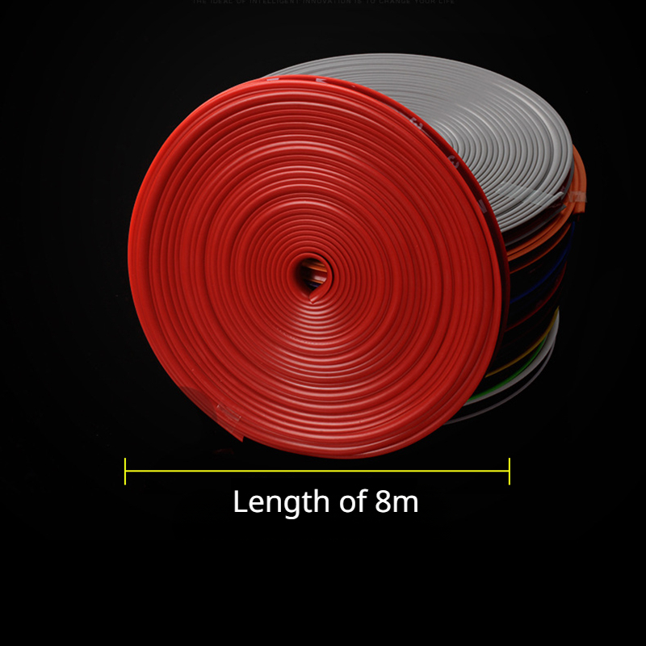
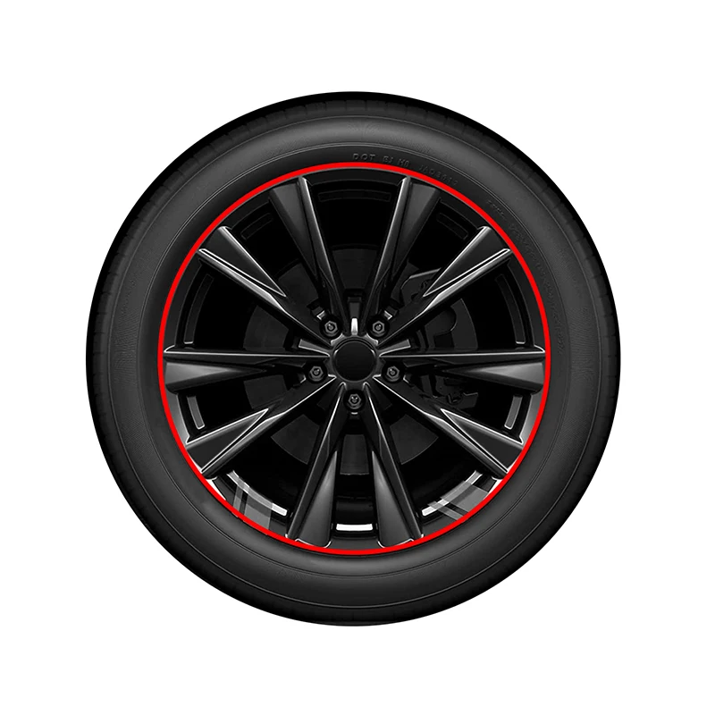
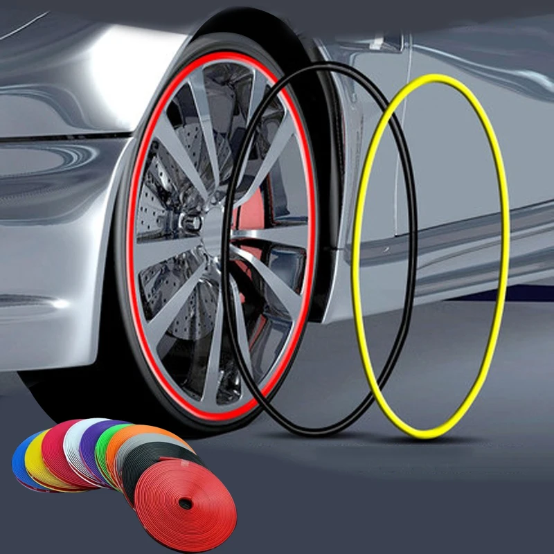
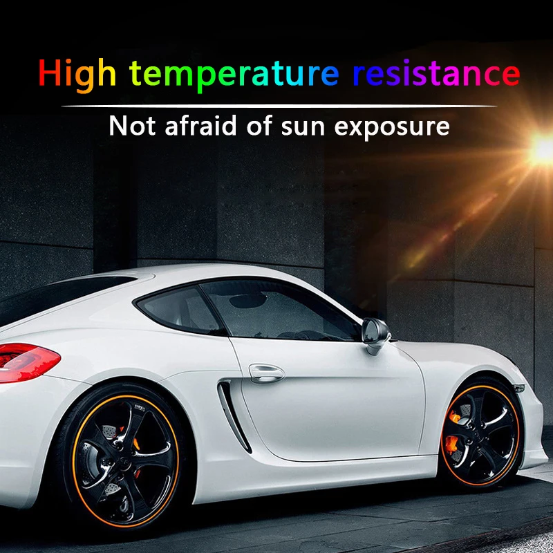
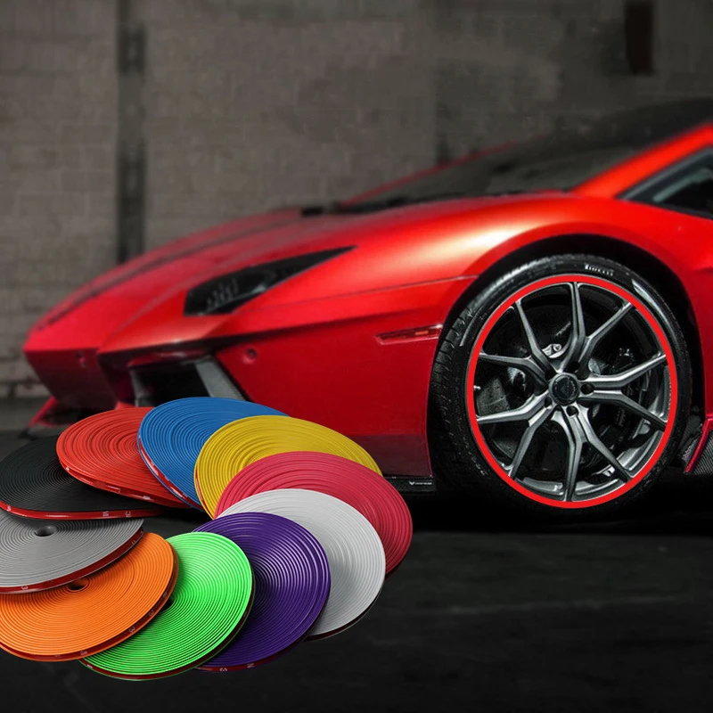
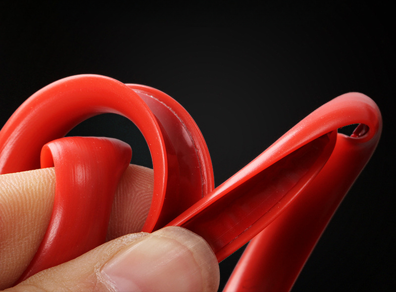
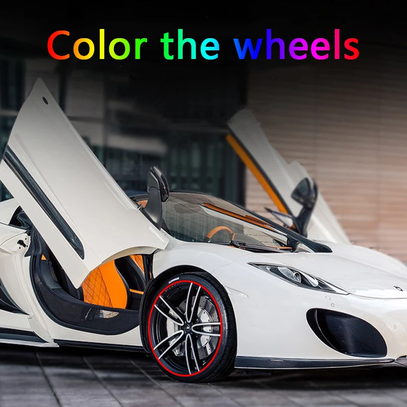
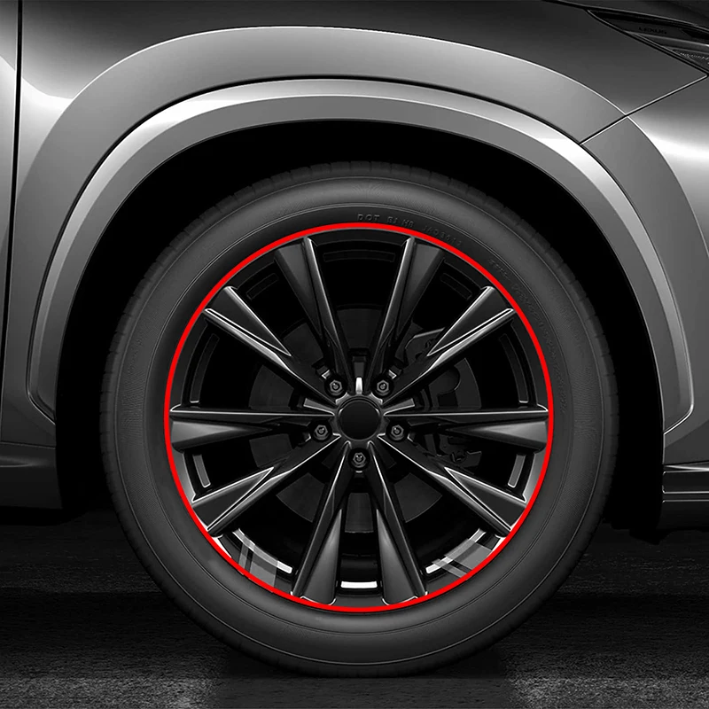
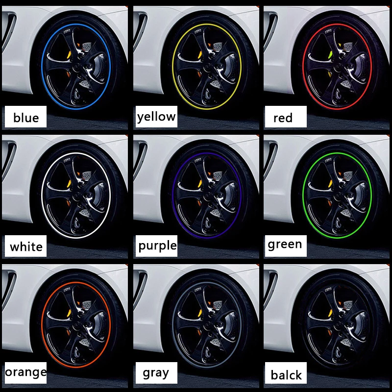

1.Designed to protect your car wheel rims from light hits and scuffs.
2.Can be used as decor strip making your car cooler and unique.
3.It is soft and will not damage the car surface.
4.With strong gel on the back, will not easy to fall off.
Specifications:
Material: rubber
Length: 8m
Notes:
1.Due to the difference between different monitors,the picture may not reflect the actual color of the item. We guarantee the style is the same as shown in the pictures.
2.Due to the manual measurement and different measurement methods, please allow 1-3cm deviation.Thanks!
Installation instructions
First, clean the wheel hub and wait for the water to dry for 5 hours. If the weather is very cold, it is recommended to place it in a high temperature area to improve adhesion. After pasting, it is recommended to wait for 36 hours before using the car








